Ortocentrul unui triunghi. Centrul cercului circumscris. Relaţia lui Sylvester. Concurenţa înălţimilor într-un triunghi
Ortocentrul unui triunghi. Centrul cercului circumscris
Să luăm un triunghi 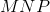, vom nota cu  punctul de intersecție al mediatoarelor, adică centrul cercului circumscris, iar 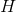 va fi punctrul de intersecție al înălțimilor, adică ortocentrul triunghiului.
punctul de intersecție al mediatoarelor, adică centrul cercului circumscris, iar 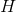 va fi punctrul de intersecție al înălțimilor, adică ortocentrul triunghiului.
Atunci are loc egalitatea:
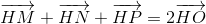.
Demonstrăm această relație:
Pentru aceasta, avem următoarea imagine:
.jpg)
Notăm cu 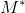 opusul lui  față de centrul cercului circumscris ; adică 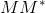 este diamentru.
față de centrul cercului circumscris ; adică 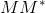 este diamentru.
Să demonstrăm că patrulaterul 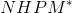 este paralelogram.
Deoarece este diametru, ne rezultă că 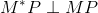.
Dar și 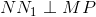, deoarece 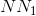 este înălțime în triunghiul  .
.
Rezultă că 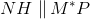.
Deoarece este diametru, ne rezultă că 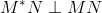.
Dar și 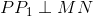, deoarece 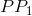 este înălțime în triunghiul .
Ne rezultă că 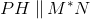.
Așadar, este paralelogram.
Diagonalele acestui paralelogram se înjumătățesc într-un punct 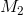.
Folosind regula paralelogramului (prezentată în primul capitol al acestui ghid), ne rezultă că:
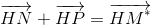.
Adunăm acestei relații vectorul  și obțiem:
și obțiem:
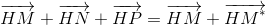.
În triunghiul 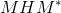, este mijlocul laturii , deci  este mediană, de unde ne rezultă că :
este mediană, de unde ne rezultă că :
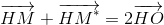.
Deci
.
Relația lui Sylvester
Să mai demonstrăm un rezultat important și anume Relația lui Sylvester.
Pentru aceasta, vom considera un triunghi , vom nota cu punctul de intersecție al mediatoarelor, adică centrul cercului circumscris (îl vom considera ca punct fix sau pol), iar va fi punctul de intersecție al înălțimilor, adică ortocentrul triunghiului.
Atunci vectorul de poziție al ortocentrului în funcție de vectorii de poziție ai punctelor ,  ,
,  , cu punctul fix este:
, cu punctul fix este:
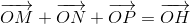.
Sau dacă este punct fix sau pol, atunci:
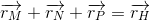.
Demonstrație:
Avem următoarea imagine:
.jpg)
În demonstrația anterioară am vazut că patrulaterul este paralelogram.
Dacă este un punct fix, atunci putem scrie relația astfel:
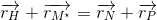.
Dar
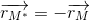,
de unde ne rezultă că:
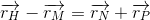
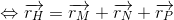.
Concurenţa înălţimilor într-un triunghi
Un rezultat important este acela că înălțimile într-un triunghi sunt concurente.
Acest lucru se demonstrază ușor.
Vom presupune că avem două puncte de intersecție ale înălțimilor și 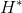.
Atunci, înseamnă că putem scrie relațiile:
 ,
,
respectiv
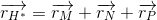.
Ne rezultă că:
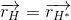,
de unde obținem că și coincid.
Observație:
Ca o concecință importantă a relației lui Sylvester este faptul că într-un triunghi centrul de greutate, ortocentrul și centrul cercului circumscris sunt puncte coliniare.
Demonstrație:
Pentru a demonstra această observație, avem nevoie de următoarea figură:
.jpg)
Scriem relația lui Leibniz în acest triunghi reprezentat mai sus, astfel:
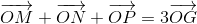.
Dar, în același timp, avem că:
.
Așadar, din cele două relații de mai sus ne rezultă că:
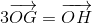.
Înseamnă că vectorii 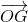, respectiv 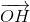 sunt coliniari, de unde obținem că punctele ,  , sunt coliniare.
, sunt coliniare.
Observație:
Dreapta care conține punctele , , se numește dreapta lui Euler.